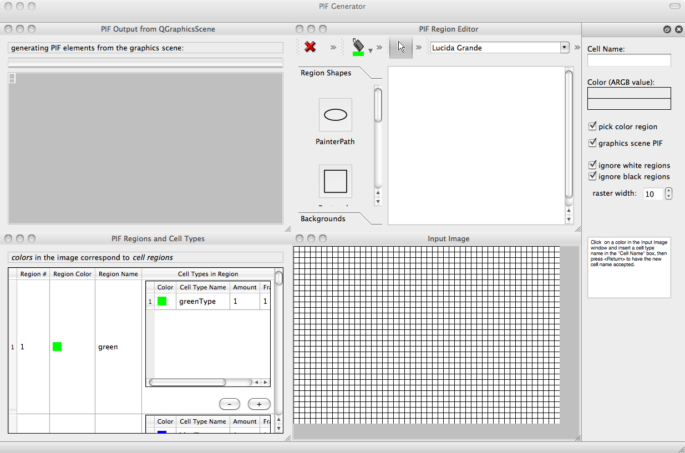
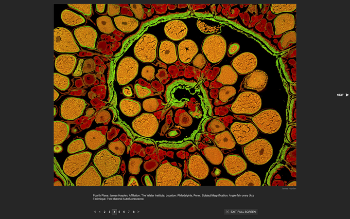

Some personal docs for using the PIF Tracer:
<p>
From Mitja (email 9/15/2010): here's a bugfix version of the PIF Generator 1.2, A.K.A. the scene-based PIF generating program I was demoing last Friday at lab meeting time. I've quickly placed it here: http://www.cs.indiana.edu/~mitja/tmp/PIF_Generator_1.2_20100914.zip it's Python code, so as long as you have your Python, PyQt and Qt configured correctly, you can start it from command line (e.g. Terminal.app on Mac OS X machines) by cd'ing into the "PIF_Generator_1.2" directory, and typing "./pifgenerator.py". There are 4 sub-windows in the application window, of which the "PIF Output from QGraphicsScene" subwindow is there purely for debugging purposes, since it shows a preview of the generated PIF file and a progress bar while preparing the PIF content. All toggle and checkbox defaults are now pre-selected for generating PIF files as it will likely become the default usage of the application. You can create a PIF scene by opening an image file and "picking" (clicking on) color regions in the "Input Image" subwindow, and the picked color regions become scene regions (geometric items) tinted in the currently selected color in the *scene* subwindow's toolbar. Or you can simply add geometric elements to the "PIF Region Editor" subwindow scene. The PIF output file is generated from scene regions (items) where each color is associated to one or more cell type names, as from the "PIF Regions and Cell Types" subwindow. I've tested several outputs with simple CC3D simulation settings, and CC3D seems to read the generated PIF files in correctly. Now if there don't seem to be anymore bugs in PIF cell type & name generation, it's time for me to work on improving the GUI by consolidating the subwindows and removing all debugging visuals, and to start adding the scene functionalities as discussed last Friday! If anyone tries out the application and hopefully successfully generates some PIF files to use in CC3D, I'd appreciate any comments, suggestions, etc. ---------------------------------------- Mitja also supplied some sample images (two of which are displayed below): .../PIF_Generator_1.2/input_images_examples$ ls amoebae.png foaminit2D.png pif2.gif resize_pif2.bmp two_colors.bmp bacterium_macrophage.png foaminit2D_low.gif pif2_noborder.gif sausage.png circle.bmp green_block.bmp pif2_noborder_low.gif shapes.png circle.png oriented.png red_block.bmp three_colors.bmp We note that all of these are 8-bit images. Can the Tracer deal with non 8-bit images?
amoebae.png and bacterium_macrophage.png
What about this 24-bit image?
AnglerFish-Ovary